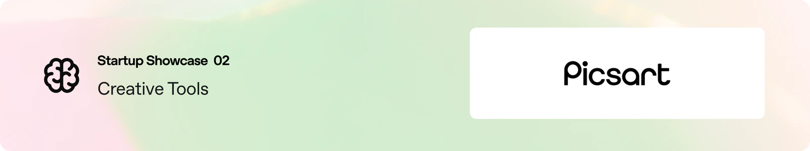
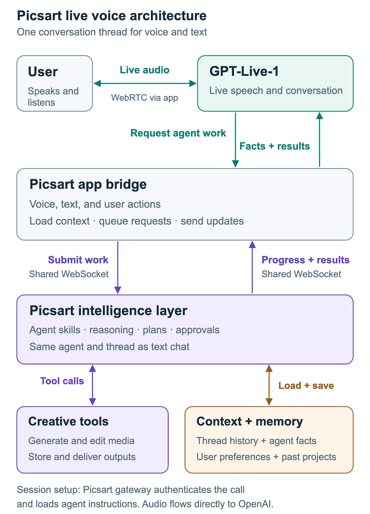
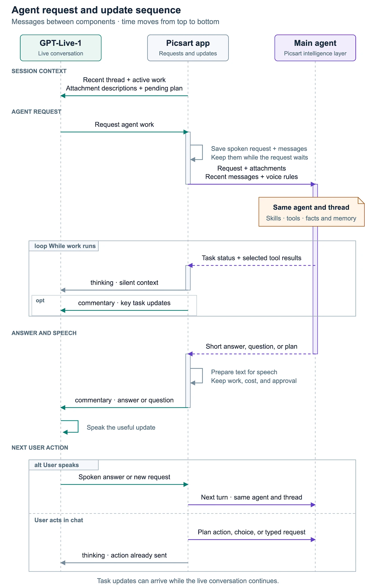
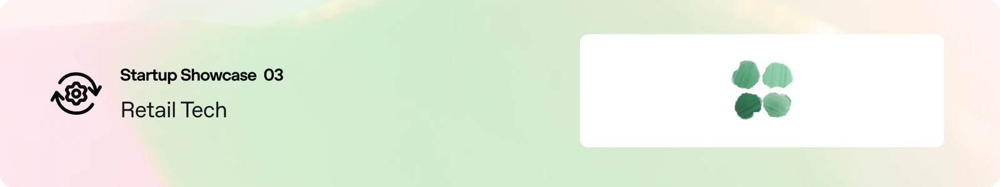
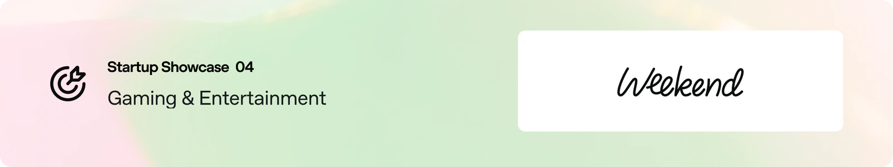

GPT-Live makes the rhythm of conversation part of a better user experience: users can jump in, change direction, and develop an idea as they speak. Unlike cascaded voice systems that pass speech through separate transcription, language, and speech generation models, GPT-Live listens and speaks simultaneously, enabling more natural exchanges where timing and interruption matter as much as the words themselves.
In this blog post, Juno, Picsart, Treater and Weekend share in their own words how they build with GPT-Live and what they’ve learned about:
- Improving calls from live production data
- Discovering voices that build trust
- Coordinating with background agents
- Orchestrating collaborative voice agents
We’ll take a look at the prompts, workflows and feedback that shape their products, with practical ideas other developers can test in their own applications.
Startup stories
Juno: Using GPT-Live to make its voice companion feel natural to patients
By Marshall Gould, Co-founder and CEO, and Isaac Tolley, Co-founder and CTO
We’re building Juno, a personal health assistant for people living with chronic conditions like long COVID, POTS and EDS.
What we set out to build
It takes having a chronic illness to truly understand the burden it brings. It isn’t just the intense symptoms, the fatigue, the appointments or the anxiety of not knowing what’s wrong – it’s the administrative overhead: remembering that medication refill, reading the latest research, tracking symptoms and linking them to the hundreds of variables that change every day, while still trying to live a normal life.
For people living with chronic illness, especially energy-limiting conditions, these trackers are a burden - manual logging becomes exhausting, and many people stop using tracking apps, even though they help.
That’s why voice has been revolutionary. With one simple spoken phrase, Juno can log many things for you at the same time.
What’s still hard about voice
Out of the box, voice is pretty incredible. It’s the most natural way for people to communicate, but we’re still learning to get it right. A few problems remain:
- Logging a symptom or pulling in context without interrupting the flow.
- Carrying memory from text to voice without blocking the conversation.
- Holding long conversations.
I think of voice models as jellyfish. They’re fast and responsive, but they have little sense of direction of their own. They drift with whatever the user just said, and often stop to ask for confirmation. Text models are more proactive, because they can draw on a much wider context and don’t need the user to explain their situation each time. With voice, you have to do the steering.
Our approach to improving our voice agents
Logging and memory without interrupting the flow
Ask most voice agents to do something and they send it off to a tool, then wait for the answer. That wait is dead air. GPT-Live can hand work to a delegated agent, but the hand-off blocks the conversation while the answer comes back. In our first version, four in five calls had at least one of these pauses: “one moment”, then around 10 seconds of silence.
Our fix is simple. After every turn, a small, fast model (OpenAI’s Decisions API) answers two questions in the background:
- Is there anything to log, and what kind?
- What from your history matters right now?
Say “log a headache”, and Juno is told it’s been logged straight away while the save happens quietly in the background. It’s fast enough that if you ask about the headache on your next turn, it’s already saved.
The second answer handles memory. Whatever matters from your history goes into the context for the next turn, and nothing else. That matters, because a voice model works with far less context than a text model, so you have to be smart about what goes in.

The result: 40% fewer hand-offs to the text agent, and the longest silence in a test call dropped from 9.3 seconds to 3.2. That’s the difference between an awkward wait and a natural pause.
Long conversations
Long conversations need the same care. Remember the jellyfish: the model has little sense of direction, so you have to steer it. A steering agent refreshes the context of the call, so at turn 100 Juno still knows what was said in the first turn, and knows what to bring up next if the conversation goes stale. You have to build this yourself if you want long conversations, and they matter: that’s where the patterns and trends show up that help people understand their health.
Finding Juno’s voice through live testing
Another hard problem is creating the perfect-sounding voice, and that’s easier said than done. What GPT-Live offers out of the box is a massive upgrade on its predecessors, but people still say a voice sounds like AI: can you create a voice that works for nine in ten people?
A focus group of people living with chronic illness told us our voice was slightly too slow, and a little condescending. That was important feedback, so we ran a study to improve it.
Using GPT-Live’s prompt-to-voice, we designed new voices from short written descriptions and tested them against today’s voice with 290 US adults living with chronic conditions. Everyone heard the same three lines, scored each voice, and picked a favourite, a least favourite, and the voice they’d want on an exhausted day.
Over five small rounds, we kept the best voices and rewrote the rest. Then 171 new people put today’s voice against the two best new ones.

The winner was a new voice made from the description in the diagram above. In the final check, more people picked it as their favourite than today’s voice, fewer picked it as their least favourite, and far fewer said it lacked warmth.

The study has limits: people heard only three lines, the scores were close, and a study isn’t a real call. Next, we’ll test the new voice on real calls with first-time callers and see whether more people come back the next day.
The exhausted-day question
We also asked which voice people would want on a day when they’re exhausted. Here, today’s voice edged ahead of the new voice. The gap is small, but it raises a bigger question: why are we so obsessed with finding one perfect voice?

Our own voices aren’t fixed. We change our tone, pace and volume depending on the situation. So what if Juno’s voice adapted to how you feel? People trust a voice more when it matches their speaking rate and loudness (Levitan et al., 2016), and GPT-Live already lets us change how Juno speaks mid-call. That’s what our follow-on study will test. You can hear every voice and see the full results at junocompanion.com/voice-study.
It’s been incredible to see what voice has unlocked for people living with chronic illness, and how much easier it has made their lives. GPT-Live is a great base model, and small changes on top of it make a real difference.
About the author and company
I’m Marshall Gould, founder of Juno. I built Juno’s voice alongside a team of three researchers: Isaac Tolley, Sean Lees, Dawid Wraga. Juno is a mission-first AI company helping people manage and live with chronic illness. We’re proud that most of our team live with a chronic illness. Hundreds of thousands of people now use Juno, and we’d love your help carrying on the mission. See more at junocompanion.com.

Picsart: Keeping voice and agent tasks in sync
By Dmitry Ivanov, Senior Staff Engineer at Picsart
What we set out to build
Creative work can outlast a call. We wanted users to talk naturally to Picsart AI agents while a task runs, or leave the call and return when the results are ready. Creative ideas don’t always arrive fully formed: talking through a mood or rough direction can be easier than writing a precise request.
GPT-Live was the first technology that unlocked this vision for us. Its natural live conversation made voice feel like a way to develop ideas together, rather than simply dictate commands. It gave us the foundation to bring that conversational experience to Picsart AI agents.
That’s why we chose to make voice an independent interface to the agent, while keeping the same thread as text chat. We selected GPT-Live to handle the live conversation, while our intelligence layer handles reasoning, tools, plans, and saved context.
The solution: Separate the conversation from the work


Shown in the diagram, the app sends work to the intelligence layer and returns context and answers to GPT-Live. It uses a shared WebSocket to send work and receive progress and results. Voice and text use the same agent, task process, and approval rules.
Our voice gateway sets up the session with the selected agent’s instructions. Live audio flows directly between the browser and OpenAI over WebRTC. A submitted task can continue after the call ends.
Sending a request to the agent
When GPT-Live asks the main agent to do something, we send the spoken request, recent messages, and attachments to the current agent and thread, marked as voice mode. We save that context at submission so later speech can’t overwrite a queued request.
We ask the main agent to write for voice: keep answers short and conversational, ask one question at a time, and don’t repeat what voice has already acknowledged. Make the work, its cost, and what needs approval clear.
What voice knows vs. what it says
We give voice three kinds of information:
| Channel | What we send and how the voice uses it |
|---|---|
| instructions | Agent identity, rules for when to request agent work, and rules for conversation |
| thinking | Recent messages, task status, selected tool data, and user actions to use as silent context |
| commentary | Answers, questions, and key task updates to say aloud |
The thinking channel carries context from the app, not the main agent’s private reasoning. Before passing along selected tool results, we strip common credential fields and binary data, limit their size, and mark incomplete results.
When a screen action sends a request to the agent, we tell voice through the thinking channel. Voice can then acknowledge the action without asking again or resubmitting it.


Routine tool steps stay silent. Plan starts and task completions become spoken updates. We group streamed answers into sentences and wait for a pause before sending them to voice. When the final answer arrives, we don’t repeat text we’ve already sent, but we still pass along corrections and approval questions.
What carries into a call, and what gets saved
Session instructions define the agent’s role, not what it remembers about the user. At the start of a call, we load recent messages, attachment descriptions, active tasks, and pending approvals so voice can pick up where the user left off.
Long-term memory stays with the main agent. When memory is enabled, the agent can use thread history, summaries, saved facts, and user or project preferences.
If the user says, “Use the style we saved,” the main agent can look it up or ask a clarifying question, then send the answer back to voice. If memory is unavailable, the call can continue with less context.
The thread saves agent requests and their attached messages, not every spoken exchange. A preference mentioned in casual conversation is saved only if the main agent receives and saves it.
When work starts, continues, or stops
We voice a plan after the agent explains it. We say work is underway only after the agent confirms it has started. We keep the proposed work, its cost, and the approval question together. Extra context is not permission to do or spend more.
If we miss an update, we recover the existing task’s state instead of restarting the task or replaying results and approval questions.
Interrupting voice or leaving the call doesn’t cancel work. Stopping a task takes a separate request and may not halt actions already in progress. New requests keep their original context and wait for the current turn to finish rather than changing work that’s already running.
The lesson: Let voice know more than it says
The practical lessons from our integration are:
- Prepare answers for voice in the main agent.
- Save each request’s context when it is sent.
- Share the thread and rules across voice, text, and screen actions.
- Keep the conversation and the task separate.
About Picsart
Picsart is an AI media production and distribution platform where 100M+ creators and businesses worldwide make, market and monetize content.
For more than 14 years, it has empowered the next generation of storytellers to create, scale and now monetize video content. Combining intuitive design tools, AI-powered image and video creation, and MCP and CLI functions, Picsart meets creators wherever they work. With more than 100 million monthly active users and over 2.5 billion downloads to date, Picsart is powering a new era of scalable, self-directed creativity, where content fuels identity, influence, and entrepreneurship.

Treater: Tuning voice agents for better call outcomes
By Britt O’Daly, Co-founder and CEO, and Ayaz Hafiz, Co-founder and CTO, Sayd Agzamkhodjaev, Software Developer
Driving outcomes through conversation
On a call with a staffing agency, our voice agent spoke to an owner about the challenges their recruiters faced with scheduling software.
As the owner explained why their previous solution hadn’t worked, the agent kept interjecting with “Mm-hmm” and “Right, right.” Eventually, the owner cut the conversation short:
Anyway, just send me an email.
The agent understood what the owner was saying, but its interjections made for a poor experience. A salesperson would learn from that interaction and adapt their future conversations. We wanted our agents to do the same.
At Treater, we build AI agents that help businesses reach and work with their partners over phone, email, and SMS. We want our agents to achieve our customers’ goals by delivering exceptional conversational experiences. We’ve built a learning system that evaluates real conversations, identifies opportunities for improvement, and tests new agent configurations against customers’ outcomes.
Here’s a demo of our agent working with several parties to recover an out-of-stock at a grocery store.
Agents that learn in the field
Before GPT-Live, we spent much of our time building and maintaining a bespoke voice stack. After adopting it, we stripped away almost everything in favor of simple prompts and saw better performance. Longer conversations correlate with better outcomes for our customers, and since adopting GPT-Live, we’ve seen median conversation length increase by 26–30%, with increases of up to 40% at the 90th percentile.
Achievement of goals our customers care about is up an average of 6 percentage points.
That frees us to spend more of our time on “what makes our beer taste better”: adapting and learning in the non-stationary world we work in. Just like people grow in their roles, we want our agents to learn what “great” means in the field.
To improve our agents, we sample each agent’s configuration across many axes (voice, prompt, cadence, available tools) and score every conversation on criteria both defined by us (sentiment, steps taken) and by the customer (preferences upheld, how much of the goal was achieved). We shift traffic towards configurations that score well using a multi-armed bandit, and losers are pruned quickly.
Offline, a review system reads past calls and proposes new configurations. Each proposal is replayed against past conversations, and we predict production reward to drop changes that won’t move the needle. Changes go to our customers for review, or ship automatically if they prefer.
GPT-Live makes many of these configurations trivial. Tone, cadence, whether to mirror the other person’s energy, how formal to be, how often to backchannel: each used to need coordination across our voice stack. Now most are a line in a prompt, so we can compare versions cleanly.
Demo: So what did our agent learn from the call with the staffing agency owner?
How Treater agents improve
Start with a goal
A software company wants demos with staffing agency owners. The catalog starts with one version of the agent.
This demo shows an anonymized and simplified version of the campaign described in the intro: a company booking demos with staffing agencies, starting from a base agent.
- Our system spotted an opportunity: Our offline review read low-reward calls and found patterns, including the agent talking over owners with backchannels on 20% of calls. It proposed four new configurations.
- It proposed improvements: Each proposal was simulated against past calls, and assigned a reward as evaluated in production. The slower pace variant scored poorly and was dropped immediately; the others were reviewed and approved.
- Evaluation in production: Traffic to the new versions is routed based on expected reward. Within a day, Version B takes most calls. Version C never catches up and is switched off on day 3. Version D, added on day 2, takes over by the start of day 3 and ends with about 90% of calls, while A and B keep a small share in case the world changes. Demos per 100 calls rise from 3.0 to 4.3.
Importantly, this system is hierarchical. Improvements to our shared harnesses benefit every use case, and what one workflow learns becomes the starting point for similar ones.
Lessons we take to heart
- Everything is a hypothesis! One of our clearest wins was when a customer wanted the agent to lead with their upcoming promotion, but calls that opened with recent increases in product sell-through did much better.
- Reward against outcomes that are rich in signal and actually move the needle. When these rewards require a long time to evaluate (e.g. closing a new deal), invest in fast-to-measure rewards (e.g. booking a next meeting), but validate that they are actually related.
- Invest in observability and measurability of the world your agents work in. Simulations and benchmarks are not meaningful unless they accurately reflect the true distribution.
- With GPT-Live, experiment with being descriptive rather than prescriptive. GPT-Live agents can adapt to context and general guidelines well without needing a full script.
With GPT-Live, we keep unlocking step-function improvements in conversation quality, and we’re excited to see what the next ten rungs of the ladder look like!
About Treater
Treater talks to the real world to execute your business goals and treats every opportunity like it’s your biggest opportunity. Our platform runs hundreds of thousands of calls across thousands of unique agents, with call volume growing 25% month-over-month for the past year. Our customers range from public enterprises to fast-growing startups. Learn more at trytreater.com.

Weekend: How two GPT-Live characters share a scene in Wit’s End
By Kevin Shen, Senior Software Engineer, and James Wilsterman, Co-founder and CTO at Weekend
What we set out to build
Our game, Wit’s End, is a voice-first fantasy tabletop game. An AI Game Master, Sir Bart, tells the story and runs the rules, and the players just talk. GPT-Live’s full-duplex audio made it feel like a real table: players interrupt, joke and argue, and Sir Bart reacts while they’re still talking.
The cast was the weak spot. A GPT-Live session speaks in one voice, so the gruff captain at the town gate and the frightened old woman in the tavern both sounded like the narrator. We wanted each scene’s main character to speak for themselves, with their own voice and personality, without losing what makes the game work: players can say anything, and the story still gets to its ending.
Here’s how a scene plays now. The party reaches the gate of Timberfall, and Sir Bart sets it up and stops: “A group of stoic guards stand watch as their captain steps forward, hand on his sword, and looks you over.” Captain Dmitri takes over in a low, gravelly voice. He’s hunting a traitor named Jade, and the party matches the description of her accomplices. One player argues with him, and Dmitri argues back. Another slips him a gold coin. Sir Bart cuts in to say the dice are rolling, narrates how the bribe lands, and hands the moment back to Dmitri, who reacts.
The solution: Two voices, one director

Who has the floor. Decisions API verdicts on both sessions’ transcripts tell the director who should speak next. It moves the floor between the two voices and starts rolls and scene endings on the Game Master’s backend.
Each scene runs two GPT-Live sessions side by side: one for Sir Bart and one for the scene’s character (Dmitri at the gate, Tabitha in the tavern), each with its own prompt and custom voice. A director (on our game server) decides who holds the floor, and only the floor-holder hears the players. Decisions API transcript triggers on both sessions tell the director what’s happening in the conversation. The Game Master’s backend, a Responses model, is the only part that calls game tools: dice rolls, scene endings and routes.
Two personalities, one story
We split each character into what’s theirs and what’s shared.
Their personality lives in their own prompt.
Each prompt also describes the character’s voice, in the same words we designed the voice from.
Illustrative shared-scene example
The scene is shared. Sir Bart and the character get the same conflict, the same resolution and the same story beats, and each beat names who says it. Dmitri introduces himself and says who he’s hunting; Tabitha tells the party where Jade will meet them. The game won’t end a scene until every beat has been said, by whichever voice owns it.

Prompt structure. Sir Bart’s voice and backend share the scene’s story; the character gets a persona prompt of their own.
From the character’s prompt
You are one actor in a live, spoken scene. A
narrator describes the world; you only ever
speak as yourself, out loud, in first person.
- Never narrate, never describe your own actions
or voice, and never speak for the travelers or
the narrator.
- You never decide whether a risky attempt
works. React to it in one short line and stop;
the narrator resolves it.
- Speak only when a traveler talks to you or you
are given the floor.How the director picks who speaks next
Without generating speech itself, the director uses Decisions API verdicts on incoming transcript fragments to identify who a player is addressing, whether an action needs a dice roll, and when narration or a character’s final line signals a handoff.

Verdicts evolve as a player speaks. The director waits for the settled, end-of-turn verdict to identify the addressee, but sends risky actions to the Game Master as soon as they’re recognized.
Who speaks next
| When | Who speaks next |
|---|---|
| Sir Bart finishes narrating and the cue verdict is 0.6 or higher, or his line ends on a speech verb (“Tabitha calls after you”) | The character |
| A player talks to the character while Sir Bart has the floor | The character, with the line to answer |
| A player tries something risky: a bribe, a lie, sneaking past, a fight | Sir Bart, right away, mid-sentence if needed. The director starts the roll on his backend; he narrates the outcome and hands the moment back |
| A player asks the narrator something or describes what their character does | Sir Bart |
| The players talk among themselves | Nobody. Whoever holds the floor gets a one-off note to let it pass |
| The character’s own words end their part (“Go on, then. Keep your heads down.”) | Sir Bart, once they’ve finished. The director starts the scene’s ending on his backend |
| Whoever was given the floor stays silent for 2.5 s | The same speaker, asked again |
Making the handoff
A hand-off does four things:
- Mutes the session losing the floor, tells it to stop, and drops any audio it has queued.
- Catches the new floor-holder up on what it missed, as quiet context with
session.thinking.append. The same lines go to its Decisions context, so its triggers judge with the same history. - Unmutes the new floor-holder and gives it its cue.
- Holds the players’ mics until the new speaker’s first sentence has landed, for at most 8 s, so the hand-off can’t be talked over.
Because the character’s session is already running, a hand-off reaches first audio in 0.84 s on average, against 1.54 s for a new session.
Keeping the game moving toward an outcome
The voices improvise. The app decides when something happens.

A bribe while Dmitri holds the floor. The roll verdict arrives mid-sentence, the director gives Sir Bart the floor and starts the roll on his backend, and once Sir Bart has narrated the outcome, a cue verdict hands the floor back to Dmitri.
- The director starts rolls and scene endings itself. In one playtest Sir Bart said “You’re going to have to roll the dice for that one” but never handed off to his backend, so no roll ran and he made up the outcome. Now the director starts a response on his backend directly. The voice says a short line while it runs, then narrates the result.
- The dice settle each scene. Scene 1 ends on a successful roll. If Dmitri gives way before any roll, the director sends the players’ attempt to the dice instead of ending the scene.
- A character can end their part, and the Game Master closes the scene. When Tabitha tells the party Jade will meet them at the Sprite Altar, the director gives Sir Bart the floor, his backend marks the scene complete, and he offers the two roads out.
The lesson
- Only one session should hear the players. When both of our systems listened, both answered every test line, often contradicting each other: Dmitri refused a bribe while the Game Master narrated him pocketing it.
- Muting a session doesn’t silence it. Tell it to stop and drop its queued audio. When it gets the floor back, lift “stay silent” explicitly: a Game Master still under that rule answered nobody for a whole scene.
- Keep every voice warm. A session’s voice is set when it starts, so each voice needs its own session. Starting the character’s session with the scene saves about 0.7 s on every hand-off, the difference between a hand-off and an awkward pause.
- Act on each verdict at the right moment. Verdicts arrive while the player is still talking, and the last one lands a median 0.19 s after they stop. Send a risky move to the Game Master as soon as it’s recognized; decide who a line was for when the turn ends and the verdict has settled.
- Ask yes/no questions as predicates, set thresholds from real lines, and keep a plain rule as backup. “Should Dmitri speak next?” scored 11 of 12 as a predicate and 8 of 12 as a two-way choice. At a 0.4 threshold, “You’re going to have to roll the dice for that one” passed as a cue and handed Dmitri the floor mid-roll; real cues scored 0.94 and up, so we use 0.6. And “Tabitha calls after you” scored 0.04, so a speech-verb check catches narration that stops where the character’s words go.
- Give every outcome to one owner. Only the Game Master’s backend calls tools, and the app, not a voice, starts rolls and scene endings. That lets each character improvise freely without bending the game’s rules.
About the author and company
The team at Weekend makes Wit’s End, a voice-first fantasy tabletop game where an AI Game Master runs the story and players just talk, in the browser and on TV. Play it at witsend.ai.
Weekend, formerly Volley, makes voice-powered games for the TV, so families can turn TV time into together time and play out loud. Its 25+ games, including Jeopardy!, Wheel of Fortune, Song Quiz and Wit’s End, run on Roku, Fire TV, Samsung and LG TVs and have been played in more than 30 million homes. Weekend is backed by Microsoft’s M12, Lightspeed Venture Partners and Y Combinator.
What’s next for voice agents
The next step for voice isn’t just better conversation. It’s software that can keep listening while work gets done, carry context across interfaces, and coordinate multiple voices without losing the thread. GPT-Live’s ability to listen and speak simultaneously gives developers a foundation for experiences that follow the rhythm of a conversation, rather than forcing people to wait their turn.
These four stories show what that takes in practice: Juno tests voices with the people who use them, Picsart keeps conversation and background work in sync, Treater learns from real calls, and Weekend gives each character a voice without giving up control of the game.
GPT-Live adds an intuitive way for people to interact with software and takes what agents can do to another level. People can shape a creative idea as they talk, guide work in progress, or step into a story and influence what happens next. These builds are just the beginning of what developers can create when conversation becomes part of how software works.
To start building your own experience, explore the GPT-Live getting-started guide and delegation and tools documentation.